Building Prometheus Dashboards in Business Central
Dashbuilder is the project part of the Business Central suite responsible for dashboards and data sets. It can read data from multiple types of data set sources, including CSV, SQL, ElasticSearch, and Kie Server or you can create your own source of data using Java programming language. In jBPM 7.50.0 Final, we introduced a new type of provider for data sets: Prometheus.
Why Prometheus
Prometheus is the facto standard for collecting metrics. It has connectors to very well-known systems, such as Kafka and metrics can be easily consumed from third-party systems. Furthermore, Kie Server by default also exports Prometheus metrics!
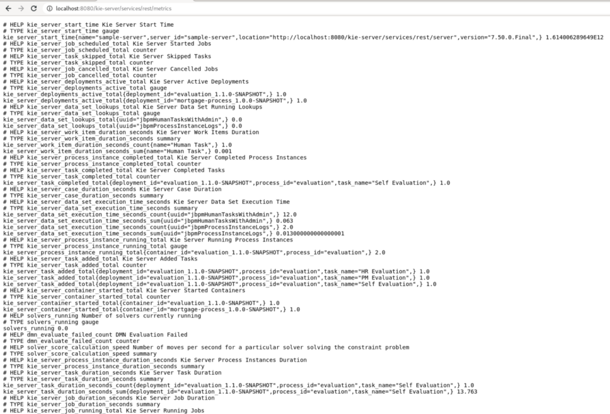
Prometheus in Business Central
To access Prometheus metrics from Business Central you must create a Data Set using Data Sets editor: Admin -> Data Sets -> New Data Set.
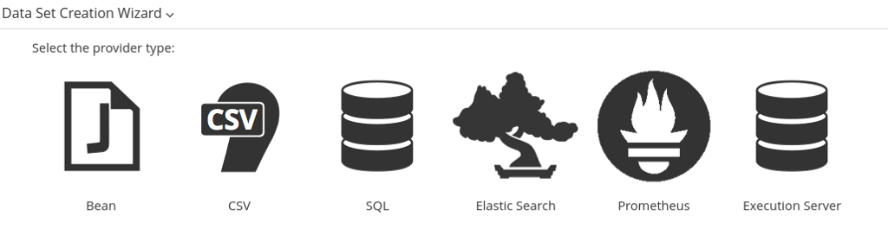
Select Prometheus on the list and then provide the Prometheus installation in the form. The field “Query” accepts any PromQL, but pay attention to the fact that if a query does not result from data then no error is thrown, just an empty data set will be created
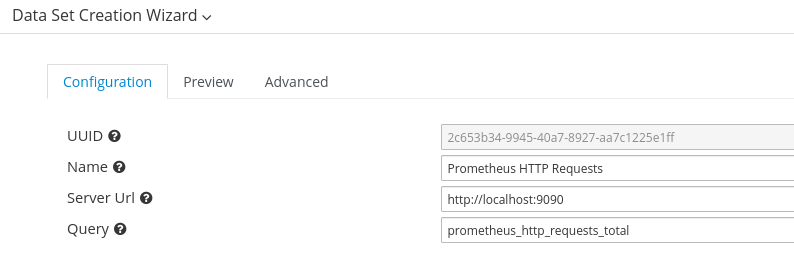
The result will contain at least the columns TIME and VALUE, then other columns will be created according to the result “metric” object.
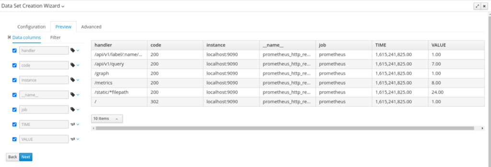
The above result was parsed from the following JSON:
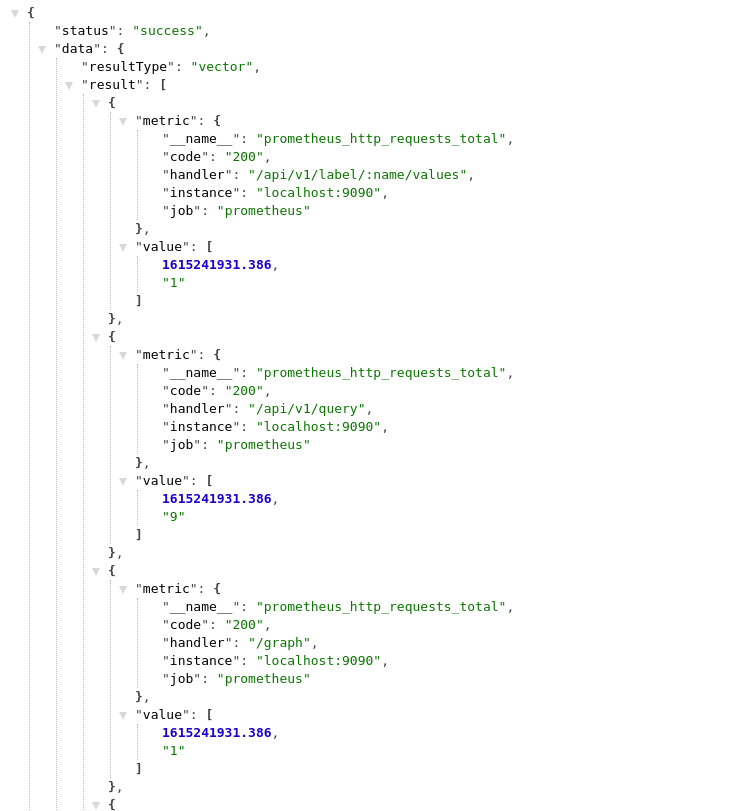
Sample Dashboard
Let’s create some dashboards for the metrics exposed in Kie Server focusing on process instances metrics. The dashboard we will create can be filtered by container id and constantly pulls data from the server.
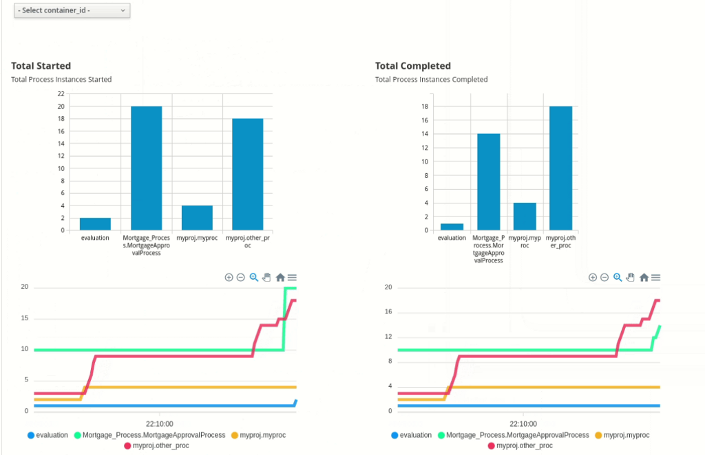
To build our dashboard we need to do the following steps:
- Create Prometheus data sets
- Create the dashboard
- Configure the dashboard for filtering and data refresh
Let’s take a deep dive on those!
Step 1: Creating Prometheus Data Sets
We need to create 4 data sets. Notice that we recommend that you have some data available on Prometheus when creating the data sets, otherwise not all columns will be available.
- Process Instances: Completed — The total number of processes completed. It uses the metrics kie_server_process_instance_completed_total
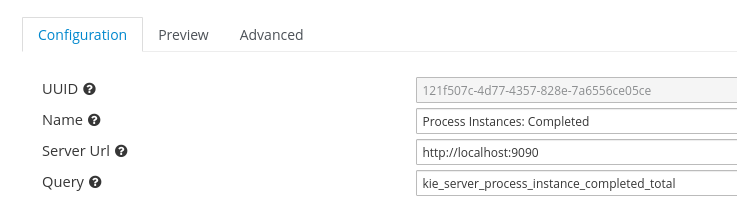
- Process Instances: Completed Recently — a sliding time window that shows processes finished in the last 10 minutes, slicing by every 5 seconds. The query is: kie_server_process_instance_completed_total[10m:5s]
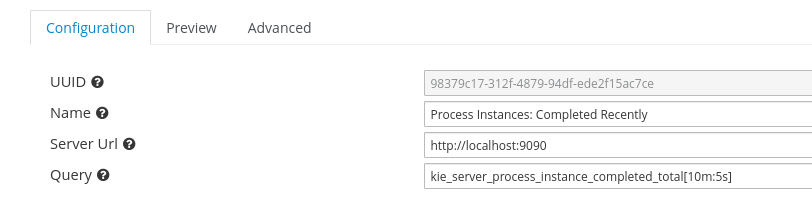
- Process Instances: Completed — The total number of processes started. It uses the metric kie_server_process_instance_started_total
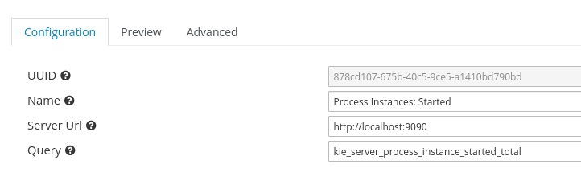
- Process Instances: Started Recently — a sliding time window that shows processes started in the last 10 minutes, slicing by every 5 seconds. The query is: kie_server_process_instance_started_total[10m:5s]
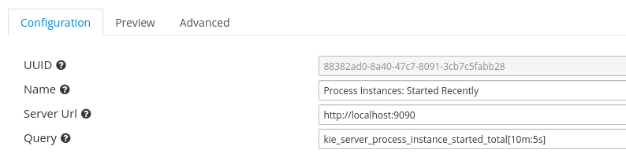
Now that we have data sets in place it is time to build the dashboard.
Step 2: Building the dashboard
Dashboards can be created in Business Central by selecting Pages from the main menu, check our Kie Live Session about dashboards or the documentation. Our simple dashboard contains a combo box to select containers, two bar charts, and two external components:
Adding the container filter: In the page editor find Reporting group and drag a Filter to the page. Select combo box and use the data set Process Instances: Started using the container_id for the entries.
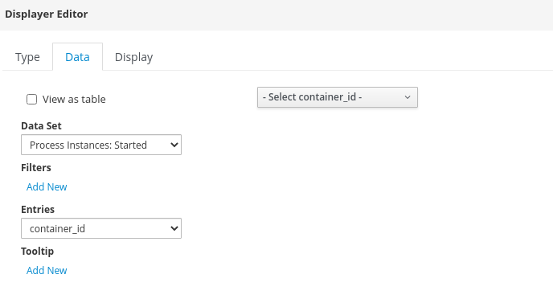
Adding bar charts: The data set for the bar chart uses the column value from Prometheus for the Y values and the process definition ID for the X-axis (categories). This step should be done for Process Instances: Started and Process Instances: Completed datasets.
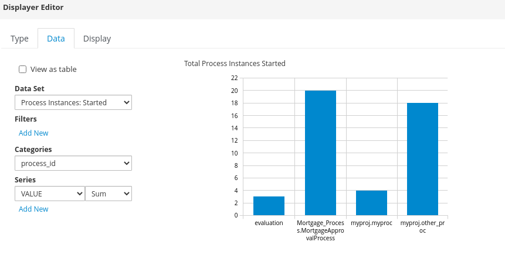
Adding time series: Time Series is a great external component created by my colleague Manaswini Das. It has the power of transposing a data set column to be used as series. When transposing the data set, the time series can use the second data set column to build the series for the chart:
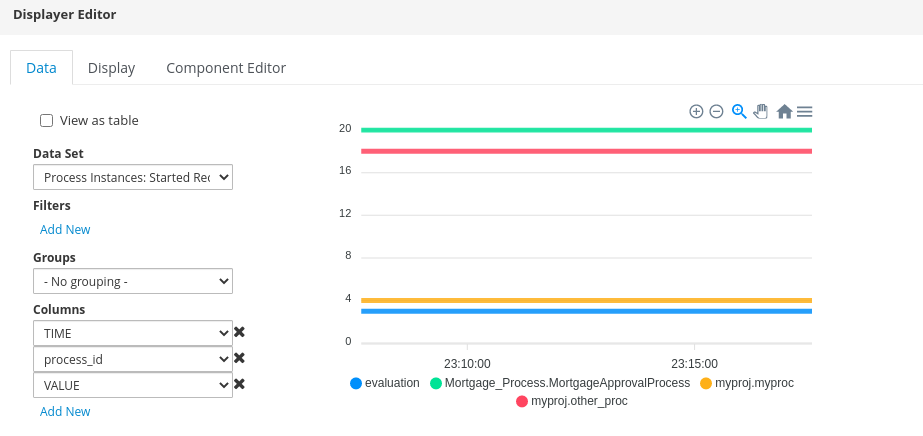
This step should be done for Process Instances: Started Recently and Process Instances: Completed Recently data sets. You may add static HTML elements to increase the dashboard, but from this point we are ready to start the configuration.
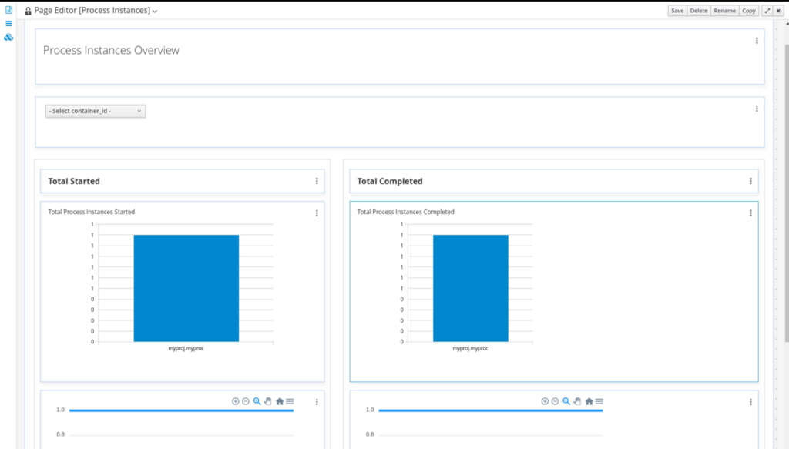
Step 3: Configuring filtering and data refresh
The final step to build our dashboard is to set up data refresh (polling) and filtering.
Data Refresh: All the components have refresh turned on so it can poll data from Prometheus each X seconds. Select the component configuration by clicking on three dots in the upper right side of the component. Go to the Display tab and configure refresh on Refresh section. This must be done for all components that will be automatically refreshed.
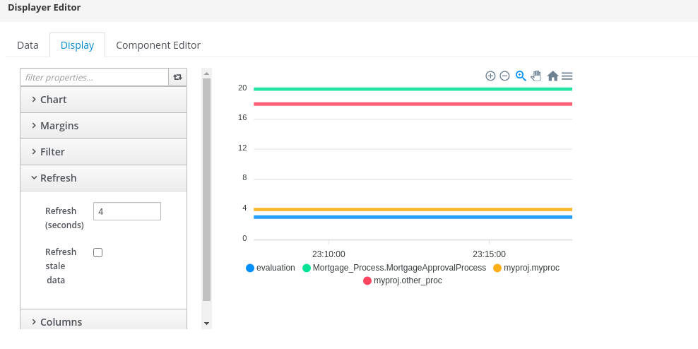
Filtering: All components that will receive the filter must also have the Listen to Others flag on the Filter section selected. This way it will have the data set filtered when we select a container using the combo box we added earlier.
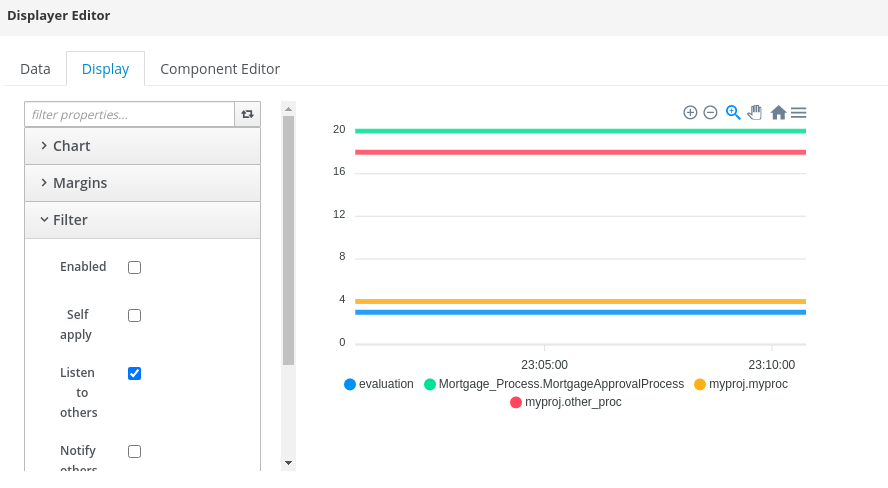
Testing the dashboard
Let’s test the dashboard by creating some data. We suggested using the Evaluation and Mortgage Process examples projects, but you can also create your own. This is our dashboard with data coming from Prometheus metrics:
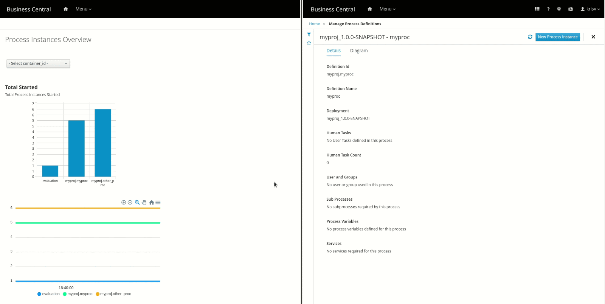
We can also filter the data to see the process from a specific container.
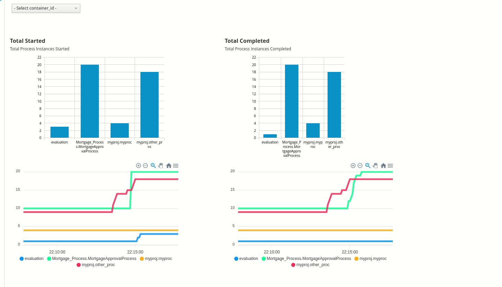
Now, your Dashbuilder dashboards based on Prometheus are ready for use! Now you can:
- Add the dashboard to the Business Central menu navigation so other uses can access it;
- Export the Dashboard to run on Dashbuilder Runtime.
Conclusion
In this post, we discussed the new Prometheus Data Set support in Business Central. In the next post let’s create a new dashboard for the Business Central tasks!